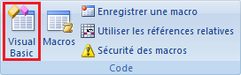

Résumés des chapitres
Voici un résumé de chaque chapitre du cours. Il peut vous être utile si vous cherchez une syntaxe particulière. Cependant, il ne suffit pas de lire le résumé pour assimiler toutes les notions. Prenez donc bien le temps de lire le cours avant de vous aventurer ici.
Accès rapide :
Première macro, utilisation de l'enregistreur de macro
Pour vérifier que l'outil développeur est bien activé, aller dans les options d'Excel. Dans l'onglet STANDARD, la case « Afficher l'onglet Développeur dans le ruban » doit être cochée.
Commencer l'enregistrement de la macro en cliquant sur ce bouton :
Arrêter l'enregistrement de la macro en cliquant sur ce bouton :
Deux modes de repérage des cellules :
absolu : la case sélectionnée sera toujours la même.
relatif : la case sélectionnée dépendra de la cellule sélectionnée précédemment (deux cases en dessous par exemple).
Ouvrir le gestionnaire de macros pour en exécuter une ou pour les supprimer, les modifier, etc... en cliquant sur ce bouton :
L’environnement de développement Visual Basic Editor
L’environnement s’ouvre en cliquant sur le bouton ci-dessous :

La fenêtre de l'environnement VBE se décompose en trois parties :
La fenêtre de code où sont écrites les procédures, les fonctions...
La fenêtre des propriétés de l'élément sélectionné, qui peut être un objet UserForm comme un module ;
La fenêtre d'explorateur de projet où sont recensés les différents objets du projet (feuille de calcul, modules, objet Userform...)
Dans la fenêtre de code, le texte y est coloré. Les commentaires sont en vert et les mots clés en bleu. Pour écrire un commentaire, il faut mettre une apostrophe devant le texte.
Une procédure commence toujours par le mot clé Sub et finit toujours par End Sub.
Pour exécuter une procédure, il faut appuyer sur F5 ou l'icône .
Accès aux fonctionnalités d'Excel depuis VBA
Un objet est une entité informatique comportant des propriétés et des méthodes. Par exemple, dans la vrai vie, un humain est un objet avec comme propriétés "Nom, Age,..." et comme méthodes "Manger, Dormir, Travailler,..."
Les objets sont organisés en collections, la collection étant elle-même un objet. Par exemple, dans l'objet Etres_vivants, il existe la collection Humains possédant ses propres propriétés et ses méthodes, comportant tous les objets Humains. Il s'agit, en quelques sortes, d'une sorte de liste contenant tous les objets Humain.
Pour accéder à un objet, il faut connaître son nom ou sa position dans sa collection. Par exemple :
Worksheets(1) permet de faire référence à la première feuille de calcul du classeur actif et renvoie un objet Worksheet.
Workbooks("Classeur1.xls").Sheets("Feuil1") permet de faire référence à la feuille de calcul de nom Feuil1 du classeur de nom Classeur1.xls et renvoie un objet Worksheet.
Workbooks("Année2006").Worksheets("Mars").Range("B2") désigne la cellule B2 de la feuille Mars du classeur Année2006.
Sheets("Mars").Range("B2") désigne la cellule B2 de la feuille Mars du classeur actif (ouvert et affiche).
Pour accéder à une propriété d'un objet, il faut utiliser la syntaxe Objet.Propriété.
Exemple : Range("A1").Value = "AgroParisTech" affecte la valeur AgroParisTech à la cellule A1.
Pour accéder à une méthode d'un objet, il faut utiliser la syntaxe Objet.Méthode.
Exemple : Range("A1").Select sélectionne la cellule A1.
Important : la propriété est une information relative à l'objet alors que la méthode est une action lié à celui-ci visant à le modifier ou qui renvoie une valeur.
Stocker de l'information : les variables et les constantes
La déclaration des variables n'est pas obligatoire mais vivement conseillée pour éviter les erreurs causées par des fautes de frappes. La déclaration d'une variable se fait comme suit :
Dim NomVariable As Type
Lorsque vous déclarez une variable, la déclaration de son type n'est pas obligatoire mais également conseillé. Par défaut, une variable est de type Variant.
Les types de variable les plus courants sont Integer (entiers), Double (décimaux), Boolean (booléens True ou False), String (chaînes de caractères) et Object (objets comme une plage de cellule ou une feuille de calcul).
Pour appeler une procédure dans une autre, on utilise le mot clé Call :
Call NomProcédure(argument1, argument2,...)
Les constantes ont les mêmes propriétés que les variables, à la différence près que leur valeur n'est pas modifiable. On les déclare comme suit :
Const NomConstante As Type = valeur
Prendre en compte des conditions
Pour exécuter des instructions dans certaines conditions, on utilise If ... Then.
S'il y a plusieurs conditions pour des instructions différentes, on utilise ElseIf ... Then.
Pour exécuter des instructions si aucune condition n'est vérifiée, on utilise Else.
Il existe plusieurs connecteurs logiques pour mettre plusieurs conditions dans un même bloc If :
condition1 Or condition2 : l'une des deux conditions au moins doit être vérifiée ;
condition 1 Xor condition2 : une et une seule des deux conditions doit être vérifiée ;
condition 1 And condition2 : les deux conditions doivent être vérifiées;
Not condition1 : la condition doit ne pas être vérifiée.
Les boucles
Pour exécuter plusieurs fois la même action, il existe différents types de boucles :
La boucle Do ... Loop qui tourne jusqu'à ce que la condition soit vérifiée (Until) ou tant que la condition est vérifiée (While).
La boucle For ... Next avec un compteur que l'on incrémente à chaque boucle. La syntaxe est la suivante :
For compteur = nbdébut
To nbfin [Step nbpas]
...
Next compteur
La boucle For Each ... Next qui inspecte tous les éléments d'une collection, d'un tableau, etc...
Définir ses propres fonctions
Une fonction intégrée d'Excel s'utilise comme une méthode d'objet, de la façon suivant : objet.fonction().
Une fonction est une suite d'instructions qui retourne une valeur. Cette valeur est renseignée dans une variable portant le nom de la fonction.
Une fonction commence par le mot clé Function suivi de son nom et d’une liste d’arguments entre parenthèses, qui peut être vide. Elle se termine par le mot clé End Function.
Function NomFonction([argument_1,..., argument_n])
Instructions
NomFonction = Expression
End Function
Les tableaux
La déclaration d'un tableau se fait de la façon suivante :
Dim NomTableau(dimension) [As Type]
où dimension est le nombre d'éléments du tableau et Type le type de variable de ces éléments.
L'index d'un élément est sa position dans le tableau. Il est compris entre 0 (premier élément du tableau) et dimension-1 (dernier élément du tableau).
Pour définir les éléments d'un tableau, on utilise la fonction Array.
La fonction UBound renvoie l'index du dernier élément (dimension-1) qui correspond à la taille du tableau moins un.